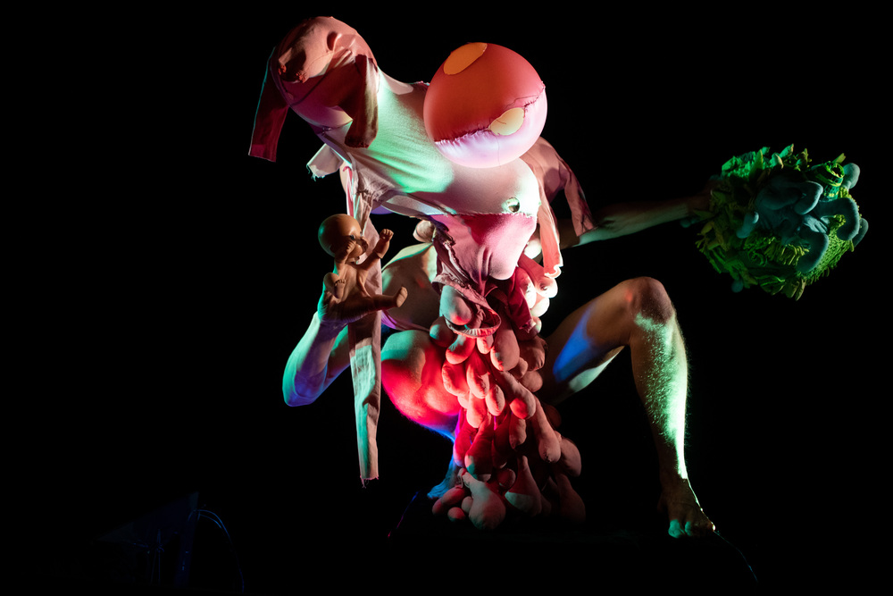

XOS is a demonic flesh planet birthed from the gaping vagina dentata of the Trans-Anarchist Superher@ Jethro Rube in space in the future after a protracted battle with cosmic scabies. It exists at the cthonic fringes of a universe of deep otherness: oceans of pus, carnivorous jungles, roiling cities of flesh. XOS finds ways to enter into Terran minds, and exists in shards of comic books, puppet shows, sounds, texts, and film.
KOSMOS INVERS: The Morphology of XOS puppet show opened at HERE Arts in NYC, and divulged the myth of an edenic green planet that inverted through a giant cloaca into a seething pink demonic porn world. Brilliant sound by Ron Shalom.

Photos by Richard Termine and Victor
Jeffreys II